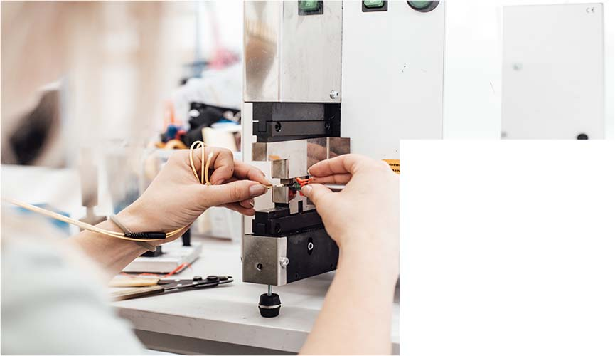
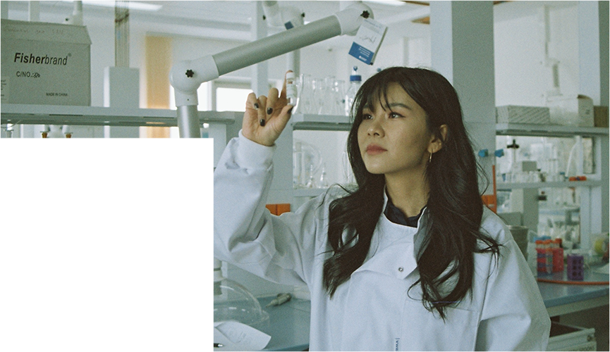

> 기업소개>
기업 현황
기업 현황
Leading Fine Change
기능은 더하고 해로움은 없애는 스페셜티 소재 전문기업

스페셜티 소재 전문기업
1964년 설립된 롯데정밀화학은 창립이래 한국의 정밀화학산업 발전과 그 역사를 함께 해왔습니다. 화학산업의 근간이 되는 일반화학 사업에서 출발해, 의약용 캡슐원료 애니코트, 건축용 기능성첨가제 메셀로스 등 고부가가치 정밀화학 분야로 사업영역을 확대하고, 반도체현상액 원료 TMAC, 컬러레이저프린터 토너 등 전자재료 분야의 사업을 추진하며 기술력 기반의 스페셜티 케미칼 전문기업으로 사업기반을 넓혀가고 있으며, 50여년간 쌓아온 역량과 경험을 바탕으로 글로벌 경쟁력을 키워나가는데 주력하고 있습니다.
연구 부문
창조적 혁신과 도전, 정밀화학 선도기업
연구부문은 제품의 새로운 용도 개발추진과 고품질의 고객 기술서비스를 제공하기 위한 연구인프라를 확대하고, 현장에서는 안전환경 체질화를 기반으로 글로벌 제조경쟁력 일류화를 위한 변화와 혁신활동을 추진하고 있습니다. 또한 ‘창조적 노사문화’를 바탕으로 수익력 창출 확대와 미래 성장 동력확보를 추진하며 고객 여러분께 더 나은 제품과 서비스를 제공하고자 전임직원이 노력을 경주하고 있습니다.
-
- 대표이사
- 김용석
-
- 설립일
- 1964.8.27
-
- 주 업종
- 기초유기화학물질 제조업
-
- 주소
- 울산광역시 남구 여천로 217번길 19
-
- 전화번호
- 052-270-6114